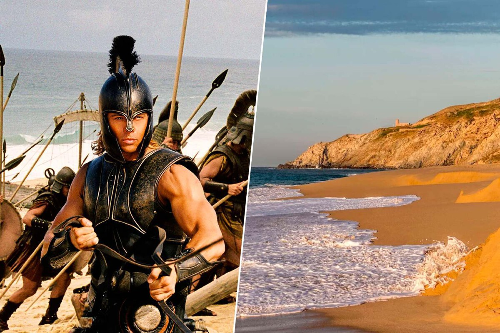

'Troya' hizo pasar México por Grecia. Así lucen los espectaculares parajes de Baja California donde se rodó la película de Brad Pitt
La película también se rodó en Malta y Londres
28 de Septiembre
Es bien sabido que detrás de "la magia del cine" hay mucho artificio, y uno de los trucos más viejos del libro es el de falsear lugares históricos sin que reparemos en ello. En el caso de 'Troya', la película de 2004 dirigida por Wolfgang Petersen, lo evidente habría sido rodar en Grecia, pero en el equipo pensaron que México era un destino más apetecible. El lugar que eligieron específicamente es Los Cabos, municipio en Baja California Sur al que el equipo encontraron muchas similitudes con Grecia, y que a día de hoy siguen siendo de un gran atractivo turístico. Si bien es cierto que la producción pasó por otros lugares, como Londres o Malta, la mayoría de las escenas que los espectadores recuerdan ocurrieron en México.
Una escena muy recordada es la invasión de los griegos en la playa. La secuencia, con los barcos llegando a la arena y los troyanos esperándolos para el combate, fue rodada en la playa el Faro Viejo, que además de sus impresionantes dunas y cálida arena, tiene como punto de interés turístico el susodicho faro, que si bien ya no funciona, es un edificio ideal para la fotografía, y de importancia histórica por sus más de 130 años.
También en Los Cabos estuvo el rodaje de secuencias clave como el combate inicial entre Aquiles y Boagrius, o la gran batalla entre griegos y troyanos en una secuencia que necesitó de la presencia de 1300 extras, en su mayoría mexicanos y búlgaros. Esto se hizo principalmente en un lugar conocido como El Salto del Caribe, un paraje seco que les permitió retratar expansivos parajes arenosos, y que actualmente es un lugar elegido bien para el picnic o para rutas de aventura.
Basada en el poema épico de 'La Ilíada' de Homero, y protagonizada por un reparto lleno de grandes nombres como Brad Pitt, Eric Bana, Diane Kruger o Brian Cox, 'Troya' es una épica mitológica que narra las aspiraciones imperiales del rey Agamenón, quien cuenta con Aquiles como su soldado más valioso y quien pronto no tardará en cuestionarse sus lealtades.